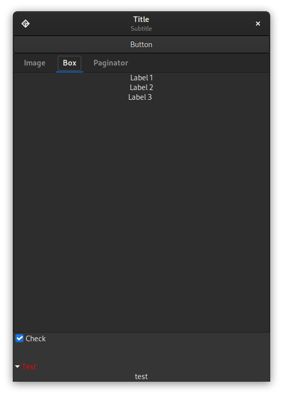
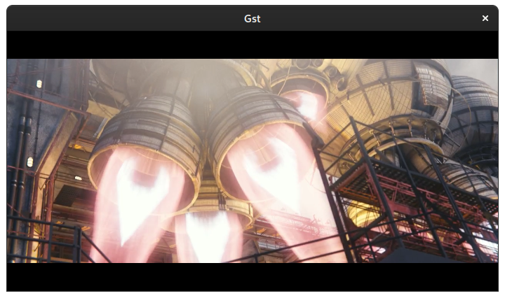

Libraries
Currently there are multiple libraries available to get started with C# development for Linux: Gtk, WebkitGTK, libshumate libadwaita, GIO, gstreamer.
GTK
Gtk is the toolkit which is used to display windows and widgets on the screen. The widgets can be added directly in code or described through an xml file.
Supported widgets are for example: Windows, dialogs, labels, images, spinner, progressbars, several buttons and switches, textboxes, tables, lists, menus, toolbars, popovers, and much more. It powers several linux desktops like Gnome and Xfce and applications like Gimp.

Visit the GTK samples to get an overview.
libadwaita
libadwaita extends GTK with new widgets to comply to the GNOME human interface guidelines. Additionally it supports mobile devices meaning full blown applications automatically adopt their UI to different view modes, if the available space changes.
Visit the libadwaita samples to get an overview.
GIO
GIO is a library to allow easy access to input / output operations. Currently there is initial support for DBus operations. DBus is a standardized IPC-Framework which all major linux desktops use for interprocess communication.
Visit the GIO samples to get an overview.
GStreamer
GStreamer is a multimedia library to play back various media format via a flexible pipelining system.  (Homepage of the free movie: https://mango.blender.org/)
Visit the GStreamer samples to get an overview.
WebKitGTK
WebKitGTK is a browser component for GTK and can be used to embed the webkit webengine into an application as a widget. There is support for the web inspector and several settings to tweak the webview to your needs. WebKitGTK only supports Linux.
The bindings make it easy to:
- Embed javascript into a webpage
- Call a javascript function
- Callback from the webpage into the C# code.
Visit the WebKit samples to get an overview.
libshumate (planned)
libshumate is map component for GTK and can be used to embed maps into an application widget. By default it uses openstreetmap.